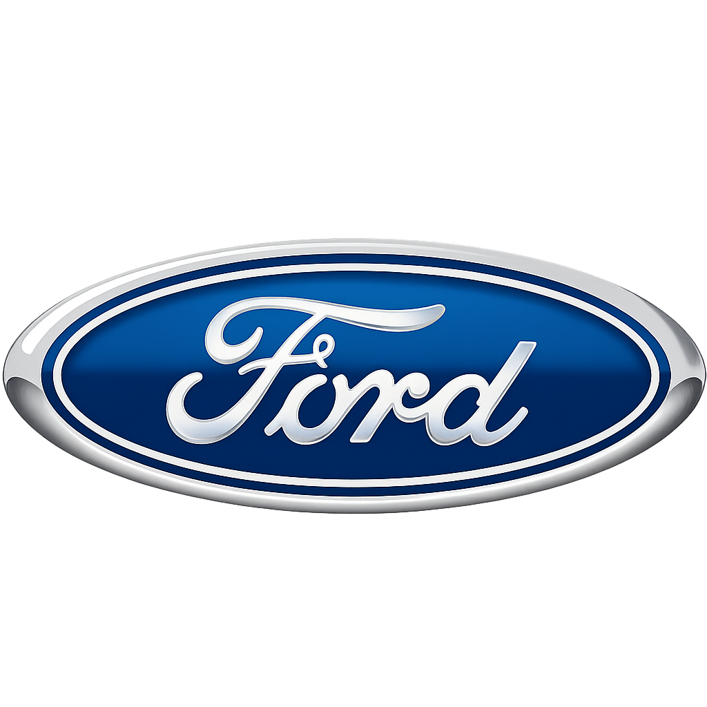
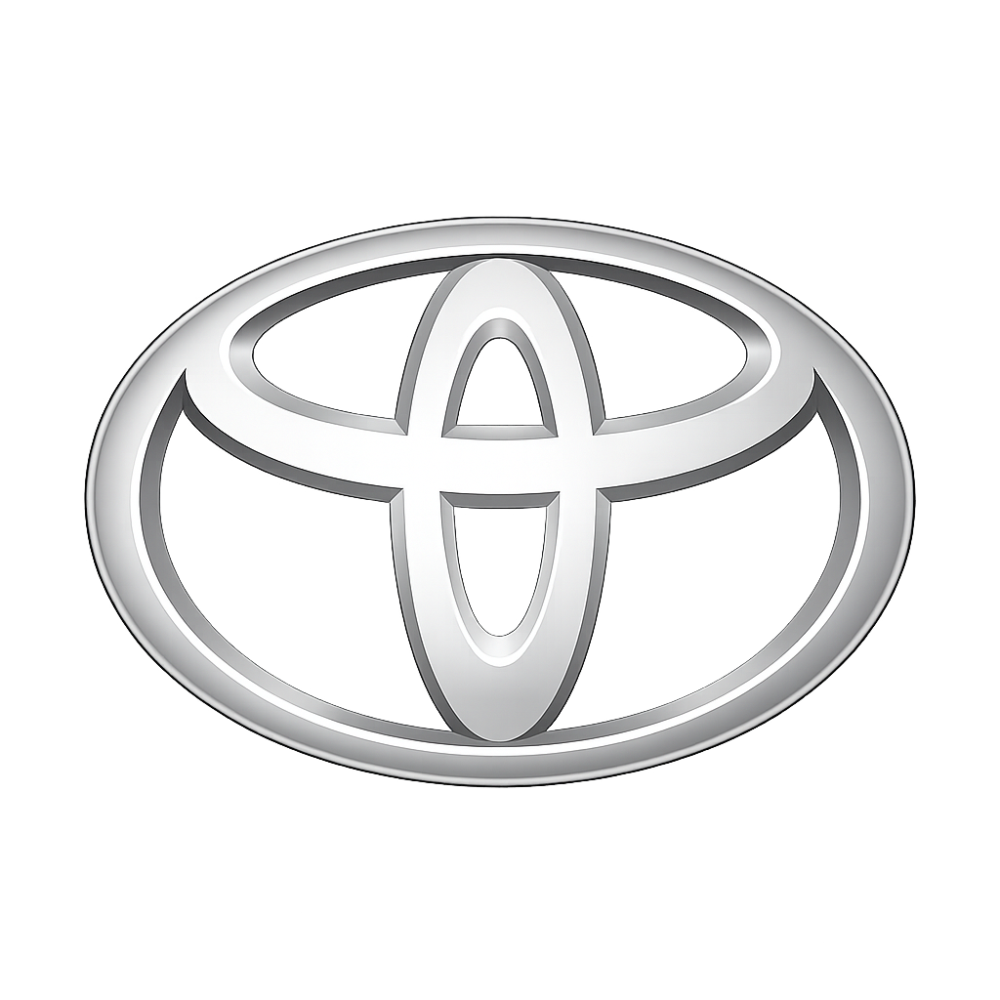
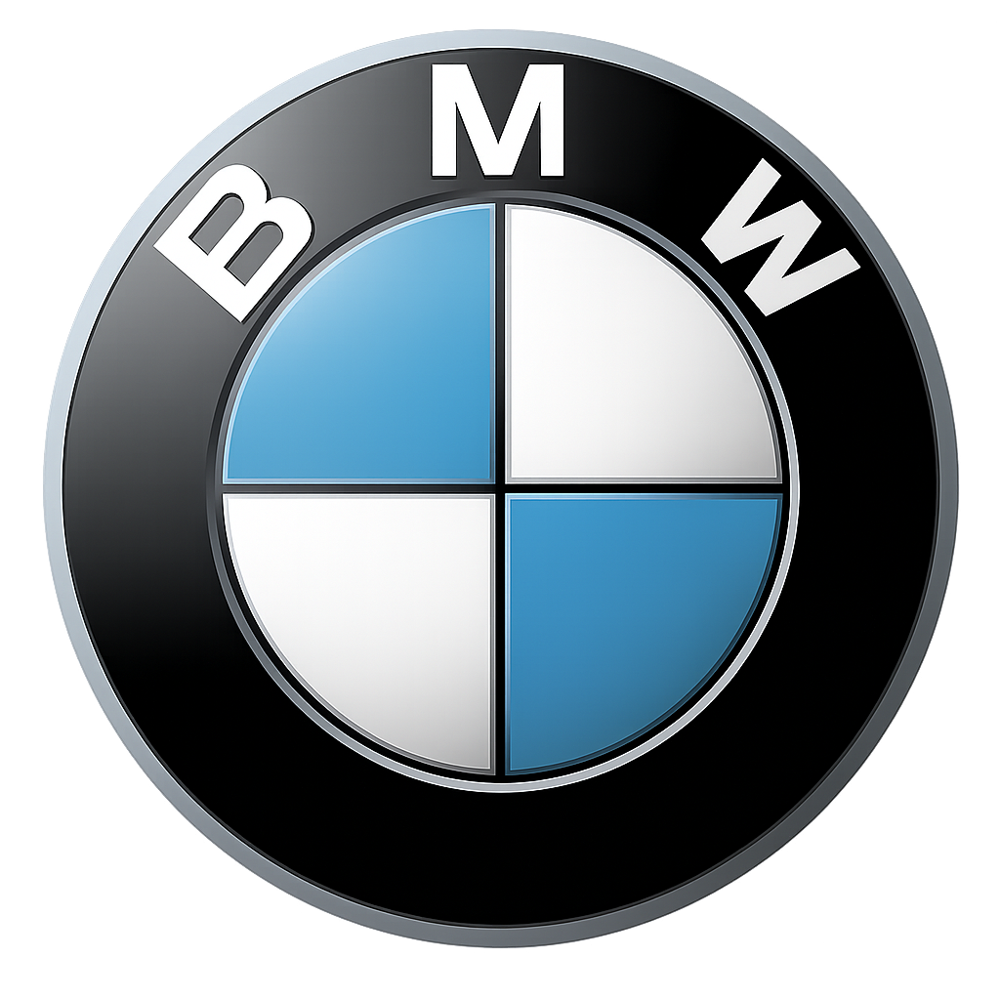

Ford

Історія бренду
Ford Motor Company була заснована у 1903 році в Детройт підприємцем Генрі Форд, який прагнув зробити
автомобілі доступними для звичайних людей. У 1908 році компанія випустила модель Ford Model T, що стала
популярною завдяки своїй простоті та низькій ціні. Важливим нововведенням стало впровадження конвеєрного
виробництва, яке значно прискорило виготовлення авто та знизило їхню вартість. З часом Ford став одним із
найбільших автовиробників у світі та випустив легендарні моделі, такі як Ford Mustang. Сьогодні компанія
продовжує розвиватися, інвестуючи в сучасні технології та електромобілі.
Моделі
Ford Focus - це популярний компактний автомобіль від Ford Motor Company, який з’явився у
1998 році як заміна
моделі Escort. Він швидко став відомим завдяки доступній ціні, комфортному керуванню та різним типам кузова
(седан, хетчбек, універсал). З кожним поколінням авто отримувало сучасні технології, економні двигуни та
покращену безпеку. Також існують спортивні версії ST і RS, які відрізняються більшою потужністю та динамікою.
Ford Mustang - це культовий спортивний автомобіль від Ford Motor Company, який вперше був
представлений у
1964 році. Він став символом так званих “muscle cars” завдяки потужним двигунам, агресивному дизайну та
доступній ціні. Mustang швидко здобув популярність і став іконою американської автомобільної культури.
Сьогодні модель поєднує класичний стиль із сучасними технологіями та високою продуктивністю.
Відгуки покупців
«Focus — чудовий вибір для міста, економний та зручний.»
«Mustang — це справжні емоції за кермом, потужність і стиль.»
Повернутися до меню
Toyota

Історія бренду
Toyota була заснована у 1937 році в Японія підприємцем Кіїчіро Тойода як підрозділ компанії з виробництва
ткацьких верстатів. Спочатку компанія виробляла невеликі автомобілі, але після Другої світової війни почала
активно розвиватися та виходити на міжнародні ринки. Важливим етапом стало впровадження системи виробництва
Toyota (TPS), яка підвищила ефективність і якість продукції. У 1970–80-х роках Toyota стала одним із лідерів
світового автопрому завдяки надійності та економічності своїх автомобілів. Сьогодні компанія є одним із
найбільших автовиробників у світі та активно розвиває гібридні й електричні технології.
Моделі
Toyota Corolla - це один із найпопулярніших компактних автомобілів від Toyota, який вперше
з’явився у 1966
році. Модель відома своєю надійністю, економічністю та доступною ціною, завдяки чому стала однією з
найпродаваніших у світі. Corolla випускається у різних кузовах і постійно оновлюється, отримуючи сучасні
технології та системи безпеки. Сьогодні вона залишається популярним вибором для щоденного використання.
Toyota Camry - це популярний середньорозмірний автомобіль від Toyota, який випускається з
1982 року. Модель
відома високим рівнем комфорту, надійністю та плавністю ходу, що зробило її особливо популярною серед сімей і
бізнес-користувачів. Camry поєднує сучасний дизайн, економічні двигуни та передові системи безпеки. Сьогодні
вона залишається одним із найуспішніших седанів у своєму класі.
Відгуки покупців
«Corolla служить роками без проблем, дуже надійна.»
«Camry — комфортний та просторий автомобіль для сім’ї.»
Повернутися до меню
BMW

Історія бренду
BMW була заснована у 1916 році в Німеччина і спочатку займалася виробництвом авіаційних двигунів. Після
Першої світової війни компанія змушена була змінити напрям діяльності та почала випускати мотоцикли, а згодом
і автомобілі. У 1930-х роках BMW представила свої перші успішні моделі авто, які поєднували інновації та
спортивний характер. Після Другої світової війни бренд відновився і поступово став відомим завдяки поєднанню
розкоші та динаміки. Сьогодні BMW є одним із провідних світових виробників преміальних автомобілів і активно
розвиває електромобілі та сучасні технології.
Моделі
BMW 3 Series - це одна з найпопулярніших моделей від BMW, яка вперше з’явилася у 1975 році.
Вона відома
поєднанням спортивного характеру, комфорту та високої якості збірки, що зробило її еталоном у класі компактних
преміальних авто. Модель випускається у різних кузовах і оснащується сучасними технологіями та потужними
двигунами. Сьогодні BMW 3 Series залишається одним із найуспішніших автомобілів бренду.
BMW X5 - це популярний преміальний SUV від BMW, який вперше з’явився у 1999 році. Він став
одним із перших
кросоверів бренду та поєднав комфорт легкового автомобіля з можливостями позашляховика. BMW X5 відомий
потужними двигунами, високим рівнем безпеки та сучасними технологіями. Сьогодні модель залишається одним із
ключових SUV у лінійці BMW.
Відгуки покупців
«3 Series — ідеальний баланс між керованістю та комфортом.»
«X5 — просторий, потужний і дуже зручний для подорожей.»
Повернутися до меню